The photo journal
A window into Pakistan.
Mountains, desert landscapes, and coastal views from our original
photo collection.
Filters require JavaScript. Without it, all photographs remain
visible.
24 photographs
 Mountain scenery · 01
Mountain scenery · 01
 Coastal scenery · 01
Coastal scenery · 01
 Desert landscape · 01
Desert landscape · 01
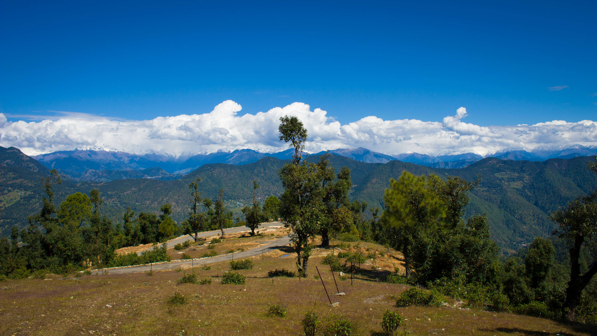
Mountain scenery · 02
 Coastal scenery · 02
Coastal scenery · 02
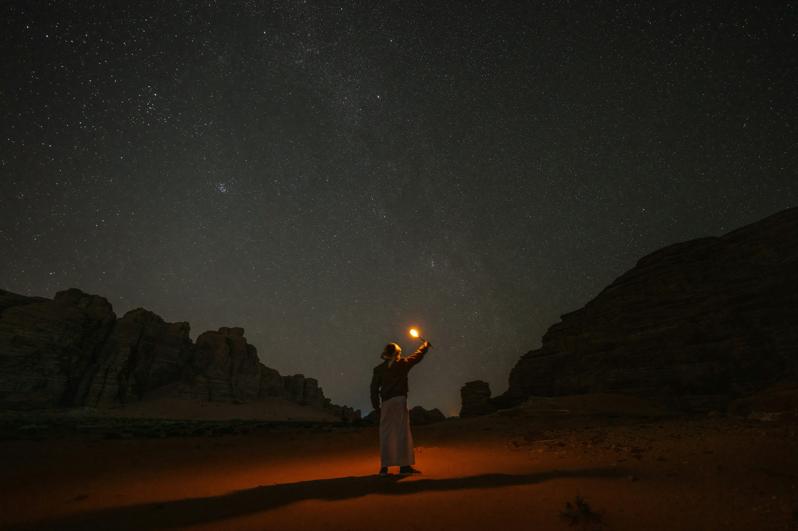
Desert landscape · 02
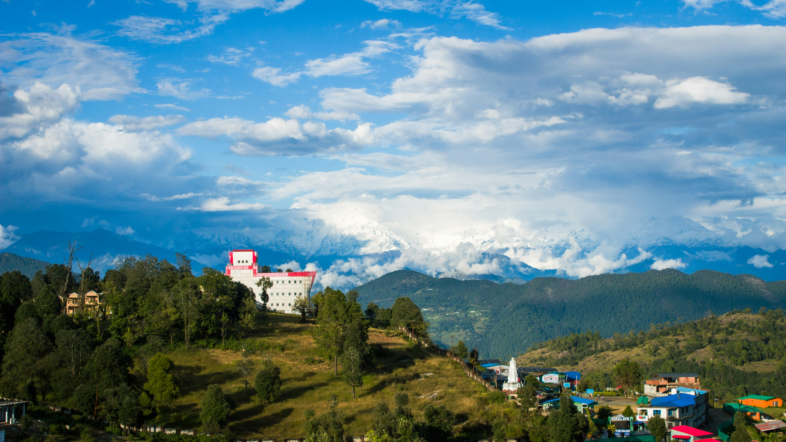
Mountain scenery · 03
 Coastal scenery · 03
Coastal scenery · 03
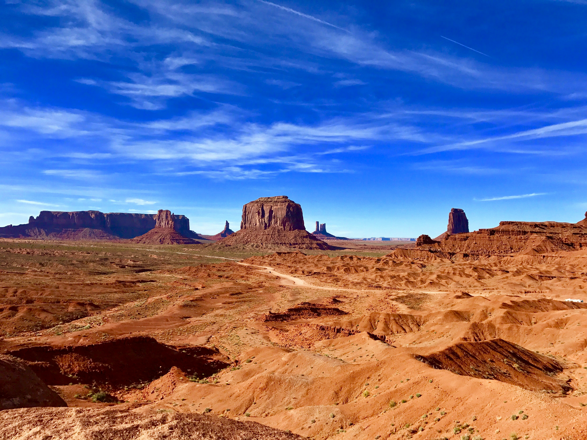
Desert landscape · 03
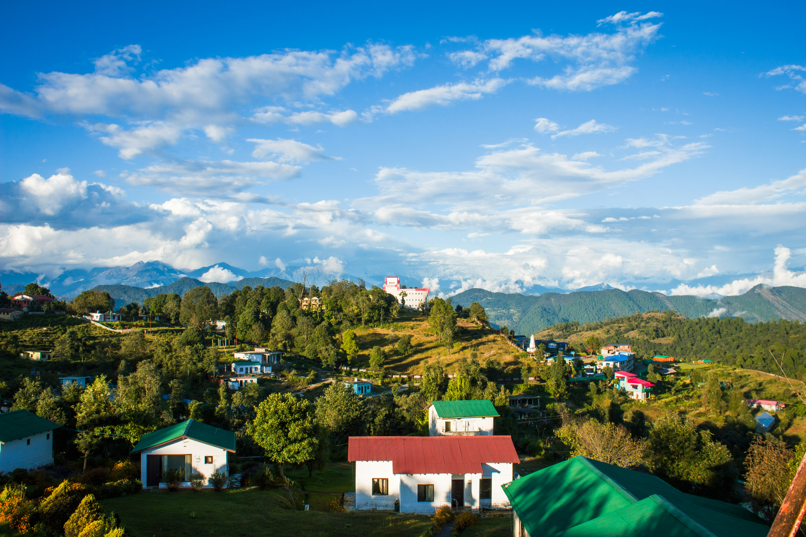
Mountain scenery · 04
 Coastal scenery · 04
Coastal scenery · 04
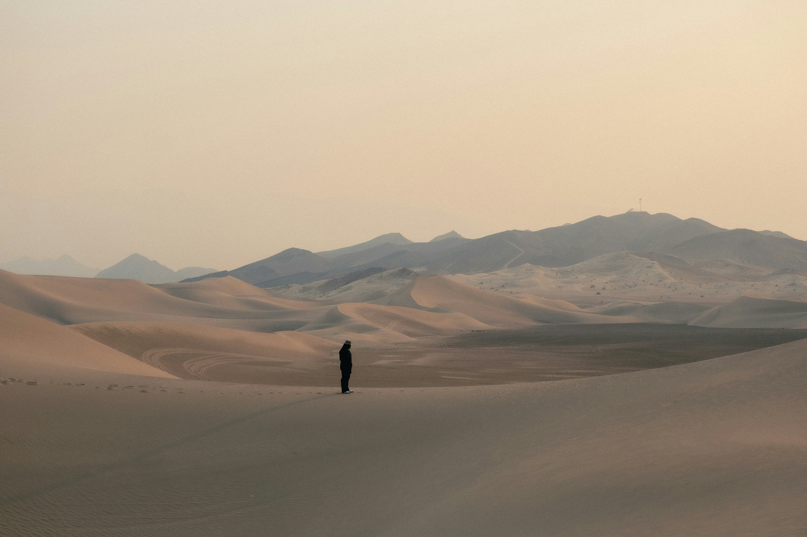
Desert landscape · 04
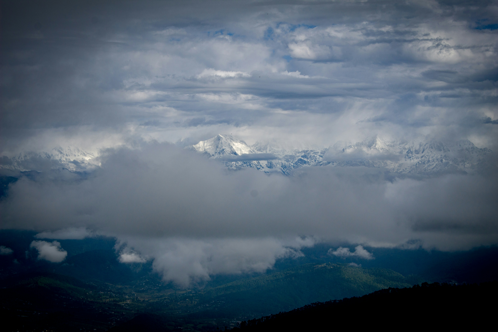
Mountain scenery · 05
 Coastal scenery · 05
Coastal scenery · 05
 Desert landscape · 05
Desert landscape · 05
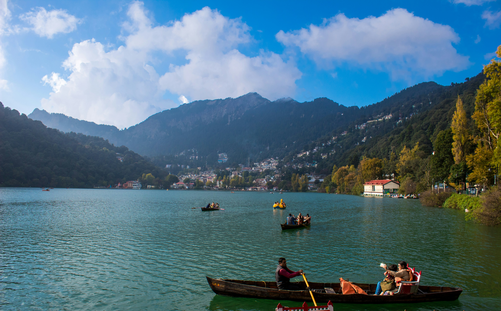
Mountain scenery · 06
 Coastal scenery · 06
Coastal scenery · 06
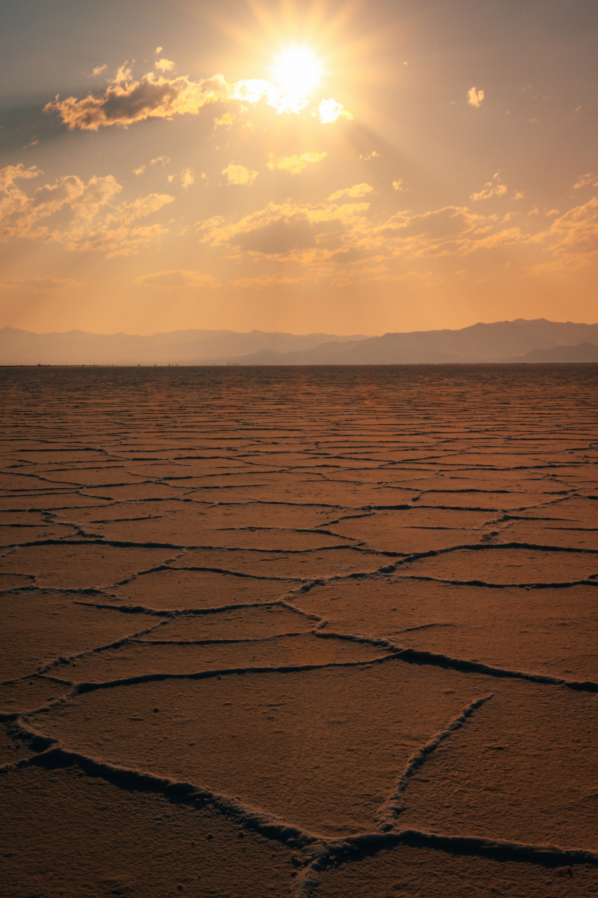
Desert landscape · 06
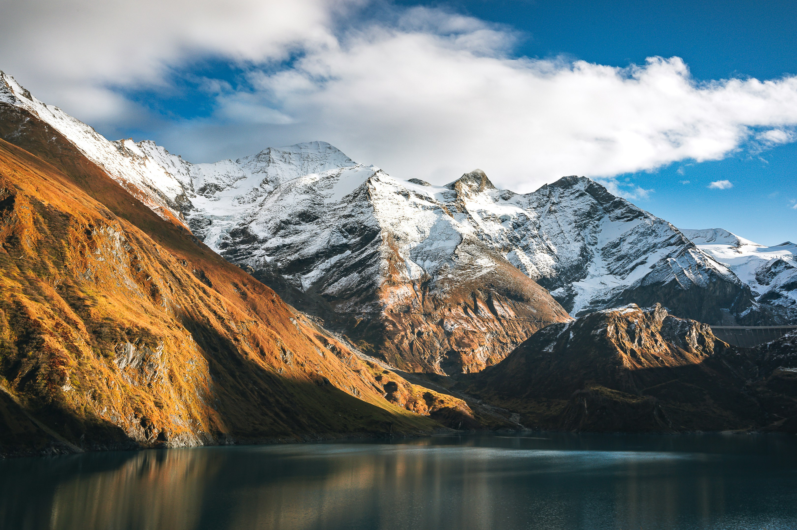
Mountain scenery · 07
 Coastal scenery · 07
Coastal scenery · 07
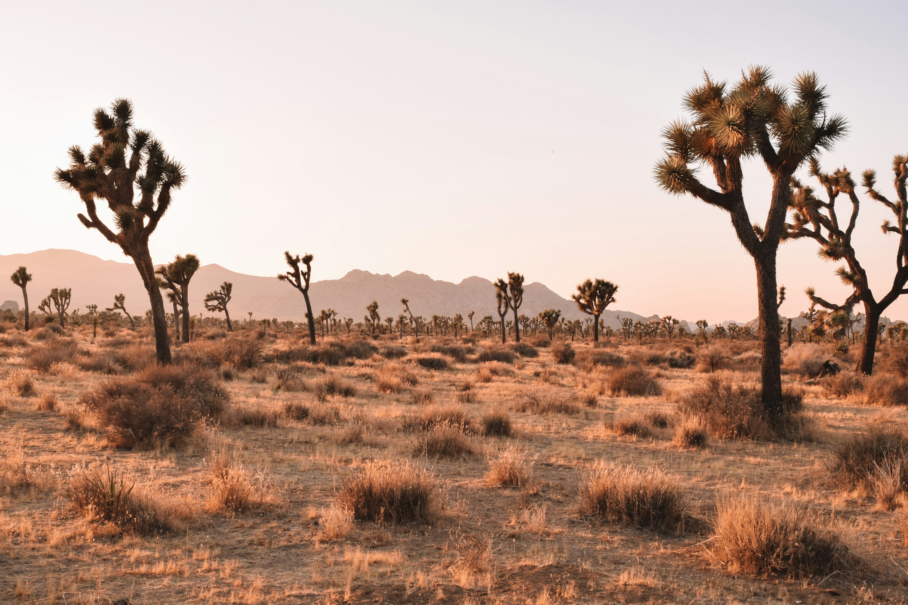
Desert landscape · 07
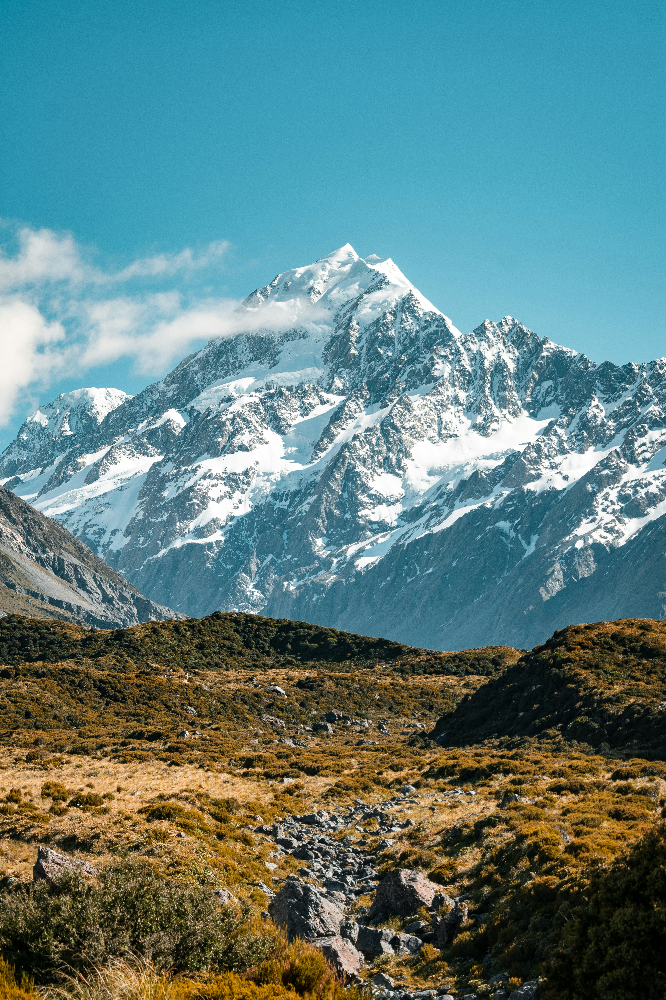
Mountain scenery · 08
 Coastal scenery · 08
Coastal scenery · 08
 Desert landscape · 08
Desert landscape · 08